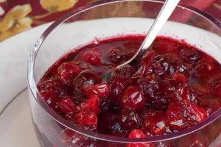

Cranberry Sauce
Recetas de Odin
Description:
Skip the store-bought stuff this year and serve homemade cranberry sauce. It's actually way easier than you think. You can make this top-rated recipe, which has more than 2,000 rave reviews from Allrecipes community members, with just three ingredients. Learn how to make, store, freeze, and serve the best cranberry sauce ever.

Ingredients
- 12 ounces cranberries
- 1 cup white sugar
- i cup orange juice
Directions
- Step 1: Gather all ingredients
- Step 2: Dissolve sugar in the orange juice in a medium saucepan over medium heat
- Step 3: Stir in the cranberries and cook until they start to pop,about 10 minutes
- Step 4: Remove from heat and place sauce in a bowl. It will thicken as it cools
- Step 5: Enjoy!
Home